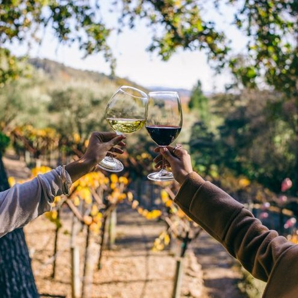
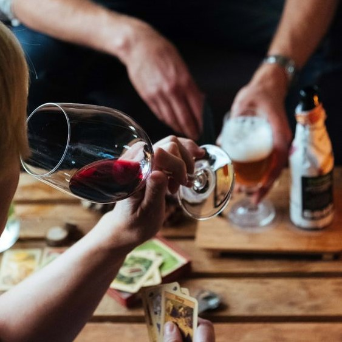
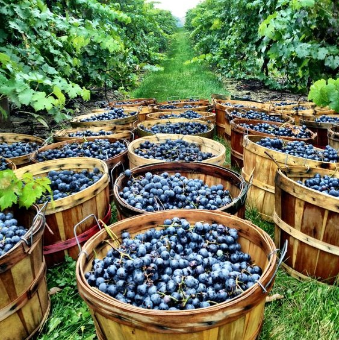

Quienes somos
Oriundos de la ciudad de Mendoza, destacamos por mantener las costumbres de nuestra tierra dando un giro moderno de sabores. Nuestros vinos han sido calificados de primera categoría a nivel país.
Ofrecemos experiencias, ya sea en nuestras bodegas con recorridos y catas exclusivas acompañadas de paisajes y buena música, así como estando presentes en asados, juntadas y charlas entre amigos, ya que este ha sido el inicio de nuestros vinos.
Contamos con 900 hectáreas con plantaciones propias, donde nos preocupamos por la excelencia de cada una de nuestras uvas. Brindamos agradables paseos para visitar nuestros viñedos llenos de color.
